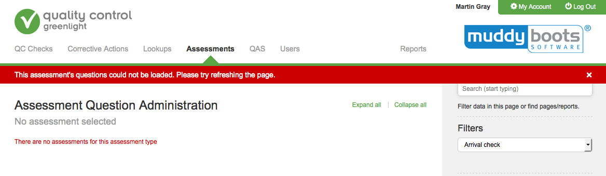
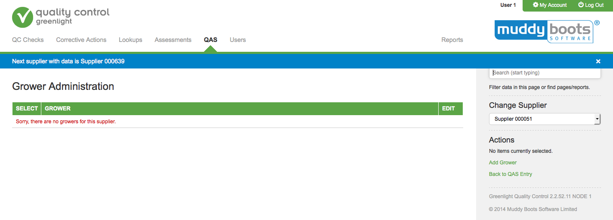
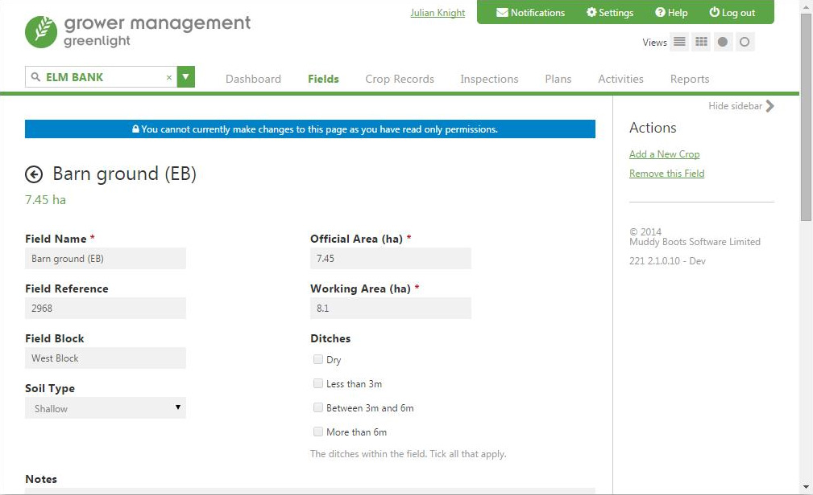

Notifications
Alerts and Notifications appear at the top of the page.
1 - The in page Notification
This alert is a a short text message which appears in a horizontal line underneath the navigation. It remains until a user clicks on the cross to close it.
Consider a background colour of green, blue or red depending on the severity of the problem.
- Green (#5BA546) - Positive mesages - no issues just a helpful tooltip highlighting a page function such as a 'did you know?'
- Blue (#0082C8) - Informative messages - an alert about the status of something.
- Amber (#FF8533) - Warning messages - not critical but a user may have to make a change
- Red (#CC0000) - Error messages - Use sparingly, this is a warning where a user needs to take action to resolve the problem.


2 - Form Page Alert
In this case it informs the user that they are unable to change the form values as they have no privileges.
This is not a warning as nothing is wrong, there is no cross as its a message which can/may not need to be resolved but would always be viewed.
